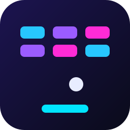

Plan 01
Neon Breakout
v1.1.3 Abgeschlossen (Vollversion)
Arcade / Breakout
Aufwand: ⭐
90 Tests · 0 Leaks
Android-15-Audio-Fix & Chii Arcade v1
Modernes Synthwave-/Neon-Breakout (M0–M8) mit 7 Spielmodi, 10 Leveln, 6 Power-Ups und synthetisierter Chiptune-Musik. Aktuell live als v1.1.3 (Code 10103, 56,7 MB APK) inklusive Android-15-AudioStreamWAV-Loop-Fix (10c3304), F3-Debug-Overlay und Project-Hub-Sync (#64).
100 %
Status & Erreicht
- Vollständig fertig (M0–M8): Alle 10 ASCII-Level, 6 Power-Ups (inkl. Multiball bis 8 Bälle & Laser) und Combo-Multiplikator bis ×4.
- 7 Spielmodi: Klassisch, Zeitangriff, Endlos, Chaos, 3-Phasen-Bosskampf, Zen & Demo-Autopilot mit Tipps.
- Android-15-Audio-Fix & Store-Sync (
v1.1.3): Guard-Frame-Schutz gegenAudioStreamWAV-Forward-Loop-PCM-Overreads inMusicRenderer/SharedSynthMusic(test_music.gderweitert),F3-Overlay sowie Eintrag im Chii-Arcade-v1-Katalog und Project Hub (#64). - Top-Qualität: 90 Unit-Tests + Smoke-Test + alle 7 Modus-Tests laufen komplett fehler- und leakfrei.
Verbleibend (nur optional)
- Keine offenen Fehler: Technik, Portal-Beschreibung, Android-Audio, Credits und Releases sind vollständig synchron.
- Optionale Plan-Ideen: Level-Editor, tägliches Seed-Level (Daily Seed) oder zusätzliche Themen-Skins sind als reine Post-Launch-Ideen gelistet.
Als Nächstes geplant
- Released & live (
v1.1.3): Signiertes Android-APK (10103,56,7 MB), Desktop/Web-Portal, Chii Arcade v1 und Project Hub (#64) sind auf dem Stand vom 24.11.2026. - Optional: Level-Editor oder Daily Seed als eigenständiges Update
v1.2.0.
Meilensteine, Codebasis & Prüfergebnisse
Meilensteine (Plan 01)
- ✅ M0: Setup, Export, shared/
- ✅ M1: Spielkern (Ball, Schläger, Blöcke)
- ✅ M2: Optik-Vertical-Slice (freigegeben)
- ✅ M3: 10 ASCII-Level & Loader
- ✅ M4: 6 Power-Ups & Combo-System
- ✅ M5: Juice, SFX & Musik-Synthese
- ✅ M6: Menüs, Optionen, Credits
- ✅ M7: Politur, Tests, 3-Plattform-Export
- ✅ M8: 6 Extra-Spielmodi + Demo-KI
Kennzahlen